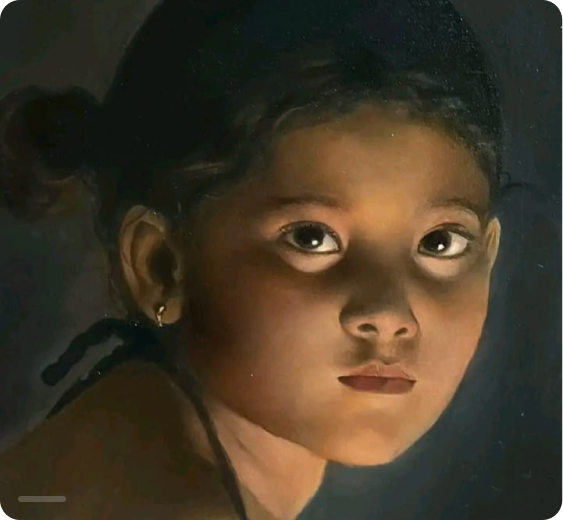
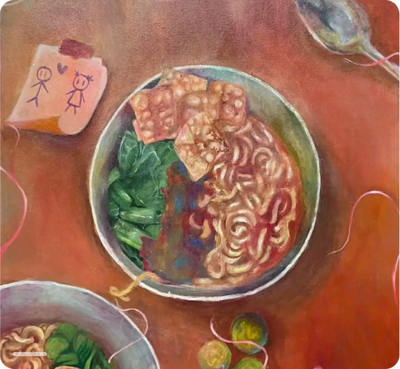
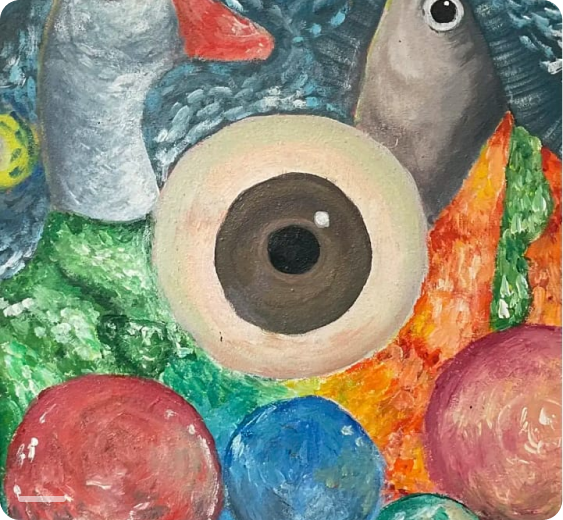

Quiet studies in color,
surface, and held light.
Cia creates spare, atmospheric paintings that
gather small shifts in tone into calm, tactile compositions.


OIL ON LINEN · 20??
Warm ochres and smoke-grey passages
held in a shallow, horizontal field.

ACRYLIC AND PIGMENT · 20??
A compressed coastal palette built from
translucent washes and dry brush marks.
OIL AND WAX · 20??
A quiet interior study arranged through
clay, umber, and chalk-white surfaces.


___
OIL ON CANVAS · 2025 · 80x60
___
A practice shaped by
patience and restraint.
Working between layered oil, pigment, and wax, Cia studies the
point where a surface begins to feel like a place. The paintings are
built slowly through sanding, glazing, and small interruptions of color.